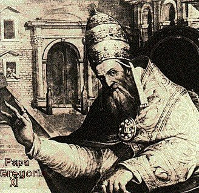
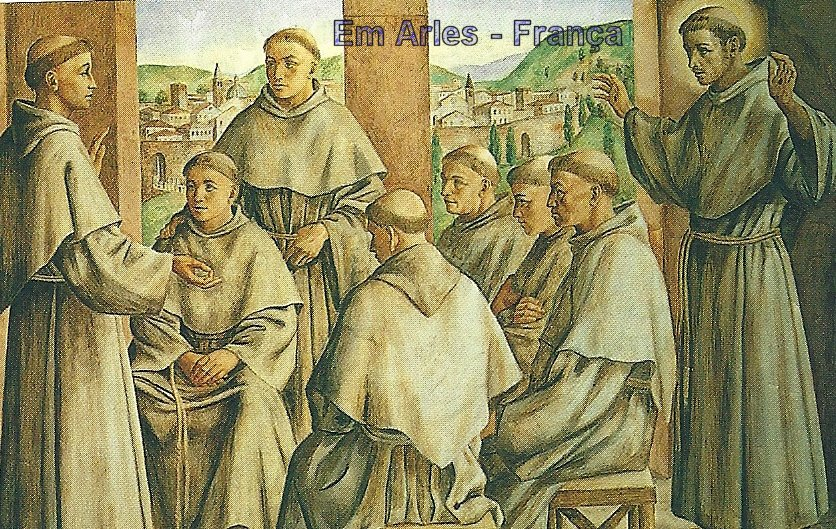
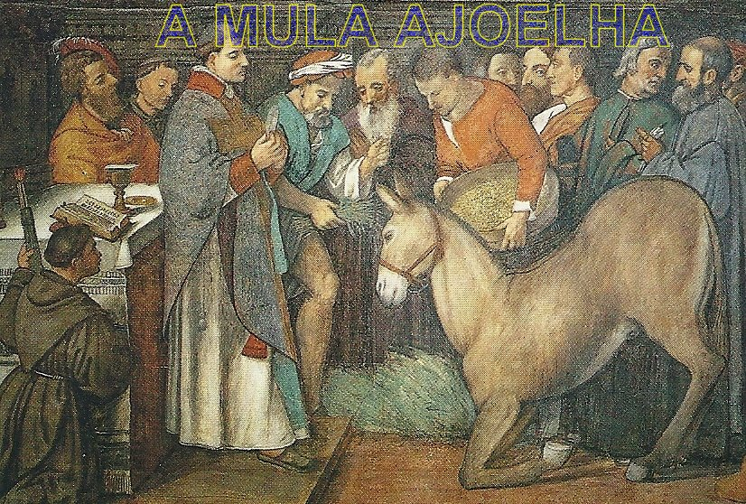
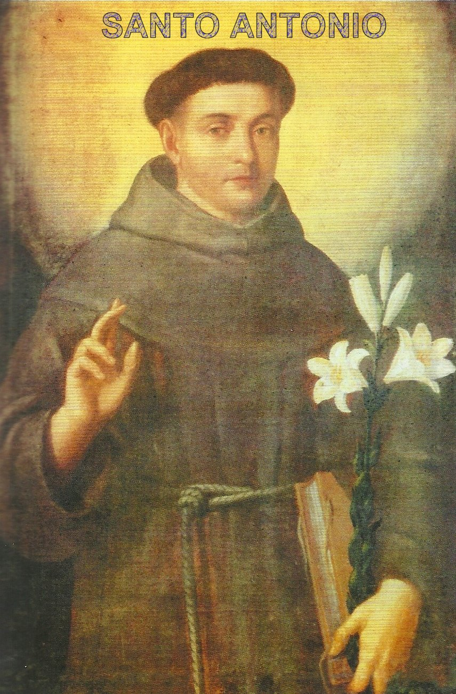
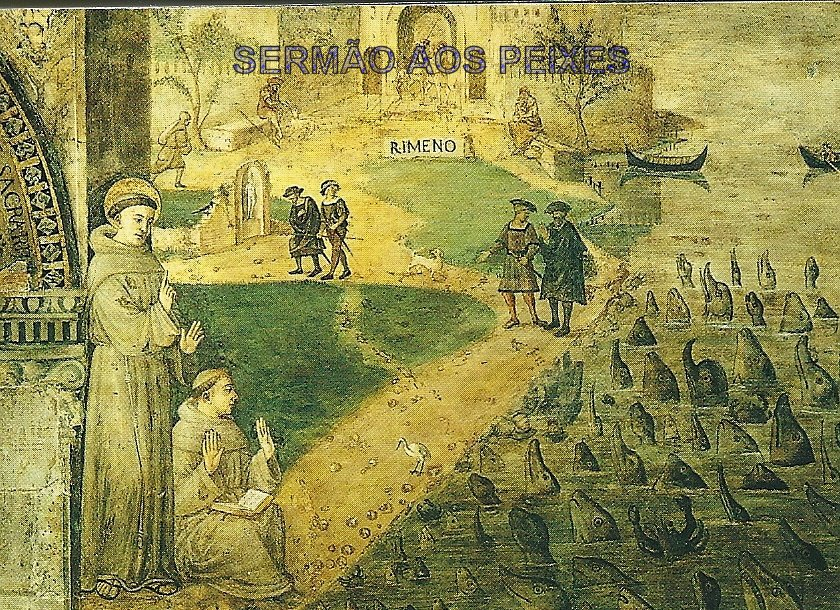
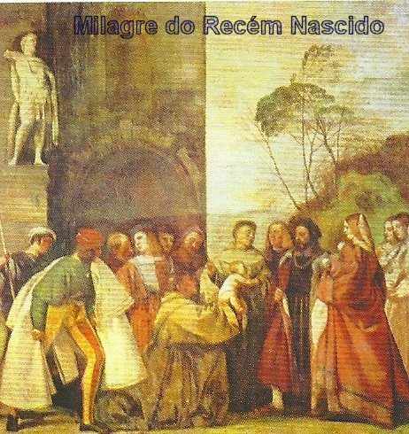

A FORÇA DAS SUAS PALAVRAS
O PREGADOR
Hoje, lendo o que as antigas testemunhas
escreveram sobre ele, devemos considerar a sua eloquência de uma maneira mais elevada e
admirável que se possa 
Antonio era um astro que iluminava e abrasava o corao de seus ouvintes. Por isso no deve constituir admirao que o Santo fosse considerado como um dos mais insignes e aplaudidos oradores de seu tempo.
Diz a tradio, que os ouvintes eram s vezes em to grande nmero que as Igrejas no comportavam receber tanta gente, e muitos ficavam do lado de fora. Ento, tornava-se necessrio armar um plpito nas praas pblicas, e todo o barulho que existia (na praa e redondezas) que pudesse impedir a boa audio, silenciava, numa admirável manifestao. Todos sentiam a doura das palavras que saam da boca do pregador, e percebiam a luz que ele derramava sobre as suas inteligncias.
O demnio inimigo de todas as almas, no olhava com bons olhos a imensa colheita de frutos que a palavra do Santo produzia nas multides, e utilizando de todos os artifcios malficos, procurava interferir na obra de Frei Antnio.
Certa vez, um grande nmero de pessoas, que por certo, no cabiam dentro da Igreja, estava com data marcada para participarem da Santa Missa e ouvirem o sermo de Frei Antonio. Ento, foi montado na praa pblica um plpito elevado ao lado de um Altar para a celebrao Eucarstica. Ao comear o sermo, ele advertiu o povo de que o demnio vinha tramando contra ele. E de fato, quando estava no auge de suas entusiasmadas palavras, eis que o madeiramento do plpito cedeu e desabou com grande barulho. A expectativa e o imediato silncio que logo se seguiu, foi prontamente cortado pelas palavras de Frei Antonio, que ileso, em p sobre os destroos, continuava firme e vigorosamente o seu sermo.
Ele tinha todos os dotes de um bom orador, inclusive, possua uma memria prodigiosa, pois retinha o que aprendera, era versado tanto na teologia como nas cincias profanas, alm de possuir o principal e necessrio ao orador sacro, que era estar abrasado de zelo pela glria de DEUS e a salvao das almas.
Em 1227 ele esteve em Roma, na poca em que tinha sido eleito o Papa Gregrio IX, que foi um grande amigo de So Francisco e ajudou de modo relevante Ordem Franciscana. Quis o Papa ouvir o exmio pregador, cuja fama se espalhara por toda a parte. O humilde Santo Antonio, teve ento, que pregar perante o Vigrio de CRISTO e na presena de muitos Cardeais. Foi um sucesso! Todos admiraram a sua eloquência, sua piedade, a erudio e principalmente a correta e perfeita interpretao dos mistrios da Sagrada Escritura. O Papa entusiasmado encontrou um apelido para Santo Antonio, chamando-o carinhosamente de Arca do Testamento.
Ao longo de sua existncia, o Santo se revelou tambm um apaixonado devoto de NOSSA SENHORA. Nos seus sermes, sempre a saudava com pequenas invocaes, como se fossem jaculatrias, recordando as excepcionais qualidades e virtudes da VIRGEM ME. Comemorava e venerava intensamente todas as Festas de MARIA e em particular, exaltava com vigor, a ASSUNO DE NOSSA SENHORA AOS CUS. como ele dizia, a Festa do Nascimento da ME DE DEUS.
NA FRANA

Antonio tinha sido nomeado por So Francisco como professor de Teologia no Convento de Bolonha, na Itlia, onde permaneceu pouco mais de um ano. Todavia, as necessidades da Igreja exigiram a sua presena na Frana. No sul daquele pas se propagavam doutrinas herticas que estavam produzindo muita confuso no meio dos cristos. Os seus adeptos se denominavam a si prprios de ctaros (palavra grega que significa puro). Esses ctaros no sul da Frana tambm eram chamados de albigenses, porque o centro da propaganda hertica estava na cidade de Albi.
Aqueles hereges negavam o Mistrio da Santssima Trindade, a Encarnao de JESUS CRISTO, a Redeno, rejeitavam os Sacramentos e todo o culto pblico e chamavam a Igreja de assemblia de pecadores.
Como sabemos, os hereges e apstatas so difceis de serem convertidos, porque esto sempre dominados pelo fanatismo e utilizam a hipocrisia e astcia, como suas principais armas. Assim, no havendo nenhuma esperana de sufocar a rebeldia contra a Igreja e o Estado, o Papa Inocncio III junto com o Rei da Frana, organizou uma cruzada para combater os perigosos hereges.
Este era o cenrio no Sul da Frana quando So Francisco mandou Antonio no ano de 1224, para aquele campo de trabalho, que o dominicano So Domingos de Gusmo, deixara trs anos antes.
Embora no sendo homem violento e brigador, Antonio tinha uma arma especial: era um ardoroso pregador da verdade. Em breve, logo se tornou um pavor dos infiis. Ele confundia-os com a força de sua palavra e com os seus convincentes argumentos.
Em Montpellier foi primeira cidade onde fez ouvir as suas pregaes. Ficou no Convento Franciscano local, alm de exercer o seu ministrio de missionrio, tambm era professor, ensinava teologia aos jovens frades. E foi ministrando o ensinamento aos jovens, que ensejou o acontecimento de um fato milagroso:
Um Novio resolveu abandonar tudo e voltar ao mundo, e na sada, furtou o Livro de Salmos com comentrios, escrito por Santo Antonio. Os livros naquela poca eram uma preciosidade e rarssimos. O Livro do Santo alm de lhe fazer falta nos seus ensinamentos, ele lamentava tambm o pecado grave cometido pelo rapaz. Ento, ps-se a rezar pelo pecador e que lhe fosse restitudo o Livro. NOSSO SENHOR ouviu as suas oraes... O rapaz, na sua fuga ao passar por uma ponte, sentiu-se detido pela presena de um negro forte que caminhando na sua direo o ameaava jogar da ponte no rio, se ele no restitusse o Livro. Aterrorizado com aquela ameaa, foi despertado de sua transgresso em face da grandeza do pecado cometido, e arrependido, voltou correndo ao Mosteiro. Lanou-se aos ps de Antonio e lhe restituiu o Livro. O Santo perdoou o rapaz e agradeceu profundamente ao SENHOR pela preciosa providncia Divina em recuperar o seu importante e precioso Livro. Tanta impresso causou ao rapaz o acontecimento milagroso, que ele envergonhado e verdadeiramente arrependido suplicou e conseguiu novamente a admisso Ordem Franciscana.
Foi esta passagem que deu origem ao fato de Santo Antonio ser considerado o caminho para o encontro de coisas perdidas. E por essa razo ele muito invocado e com eficcia, pois propicia o encontro das coisas, ou seja, o achado daquilo que foi perdido.
De Montpellier Santo Antonio foi a Tolosa. Durante muito tempo procurou convencer os hereges da presena de JESUS CRISTO na Hstia Consagrada. Os argumentos dele eram to fortes que os infiis, sem saber o que falar ficava mudos. Mas um deles mais ousado, querendo acreditar nas palavras do Santo, mas sem um fundamento moral no corao, decidiu propor uma questo:
Eu voltarei a frequentar a Igreja Catlica se presenciar um milagre. Deixarei minha mula trs dias sem alimento. No quarto dia, estando ela esfomeada, ao invs de correr para a sua comida, ir ajoelhar diante da Sagrada Eucaristia, que ser trazida a sua presena.
Santo Antonio respondeu: Confio no SENHOR que me conceder esta graa para a sua converso e a dos outros.
No quarto dia, pela manh, o Santo levou
a Custdia com a Sagrada Hstia praa pblica. Grande quantidade de hereges aguardava
os acontecimentos. 
Ainda em Tolosa, na Frana, no dia 14 de Agosto, vspera da Festa da ASSUNO DA VIRGEM MARIA, ele meditava sobre as glrias de NOSSA SENHORA e sentia uma profunda tristeza, pelo fato de parte da humanidade no aceitar e no crer que Ela foi recebida no Cu com o Corpo e a Alma. E assim, enquanto pensava, a ME DE DEUS lhe apareceu cercada de vivssima luz e lhe consolou dizendo: Fica certo, meu filho, que este meu Corpo, Arca do VERBO ENCARNADO, foi preservado da corrupo do tmulo. Fica igualmente certo de que, trs dias depois da minha morte, ele foi carregado nas asas dos Anjos para a direita do FILHO DE DEUS, onde Eu reino como Rainha.
Depois, NOSSA SENHORA, exortou-o a pregar esta Doutrina sem receio, o que ele fez ao longo de toda a sua existncia.
Em seguida o Santo foi para Limoges, onde passou o ano de 1226, realizando uma obra admirável, em benefcio das pessoas e da Igreja, como testemunho de seu incomensurvel amor cristo, e do especial e milagroso auxilio que DEUS lhe concedia.
Certo dia, os Frades deixaram o Coro onde rezavam as Completas, observando que no campo vizinho, uma poro de pessoas estava devastando a plantao. Os Irmos correram e foi dizer o fato ao Superior Frei Antonio. Ele tranquilizou-os, dizendo-lhes que voltassem orao, porque aquilo era uma trama de satans, para perturb-los no recolhimento. Eles obedeceram e no dia seguinte, viram que o campo no tinha qualquer vestgio de devastao.
Em outra ocasio, tendo o Santo terminado a Santa Missa onde fez um magnfico sermo, a fim de fugir aos aplausos do povo, saiu depressa da Igreja em direo ao Convento. Encontrou-se com Pedro, um lavrador que residia nas proximidades, trazendo nos braos seu filho de quatro anos de idade, completamente aleijado de ambas as pernas, e alm disso, com epilepsia. Lanou-se aos ps de Frei Antonio, suplicando que ele fizesse o sinal da Cruz sobre a criana e invocasse o precioso auxilio Divino. O Santo abenoou o menino traando sobre ele uma grande Cruz, desde a cabea at os ps. Chegando de retorno a sua casa, Pedro colocou o filho no cho e que alegria, que surpresa maravilhosa, observou que a criana, sem dificuldade, comeou a andar, primeiro com o auxilio de uma muleta, e depois, somente com uma bengala era suficiente para ampar-lo a andar com desenvoltura, e por fim, andava normalmente sem qualquer auxlio e sem nenhum embarao. Tambm nunca mais teve acessos de epilepsia!
DE REGRESSO A ITLIA

O comparecimento de Antonio era esperado, em face de seu ofcio de custdio na Frana e tambm, porque era conhecido como profundo telogo e exmio pregador.
O Santo deixou a Frana com uma aurola de nomes que bem marcavam a sua passagem por l: era chamado de taumaturgo,martelo dos hereges,terror dos demnios, trombeta do Evangelho.
Mas a viagem de navio, da Frana para a Itlia, no foi to tranquila e direta, como ele desejava. A Providncia Divina tinha outros planos. Antonio foi parar outra vez na Sicilia e se recolheu ao Convento Franciscano existente em Messina, aquele mesmo onde se abrigara da vez anterior.
Conta a tradio, que neste Convento, ele esteve trs dias encarcerado. O caso foi at muito interessante. No existia gua encanada. Para abastecer o Convento, os Frades iam longe para buscar gua. Era um percurso cansativo e penoso. Certa vez, se ausentando o Superior por alguns dias, deixou Antonio em seu lugar. O Santo, compadecido com o difcil e cruel trabalho dos Frades para fazer o abastecimento de gua, fez cavar um poo bem prximo ao Convento, com a inteno de poupar os Frades daquele imenso sacrifcio e de solucionar o problema de falta dgua para sempre. Mas, no seu retorno, o Superior no gostou da iniciativa do Santo e repreendeu fortemente a Antonio, encarcerando-o por trs dias. E todo o aborrecimento dele foi justamente porque Antonio tinha tirado aos Frades aquela terrvel penitncia de ir buscar a gua to longe, porque no pensamento do Superior aquela penitncia era benfica e necessria, servia para purificar os Frades. Antonio, servo humilde e fiel, cumpriu os trs dias de crcere se deliciando em poder fazer as suas prprias mortificaes e se dedicando, a uma total contemplao a DEUS.
Depois, seguiu a Roma, foi chamado pelos Frades que viviam na capital italiana, tendo celebrado em diversas Igrejas e Baslicas, impressionando a todos que ouviam as suas palavras.
Finalmente seguiu para Assis, afim de participar do Capitulo Geral. Santo Antonio foi eleito Superior Provincial dos Conventos da regio Emilia Romagna, que abrangia quase todo o norte da Itlia. Este foi o campo de sua vida apostlica de 1227 at a sua morte em 1231.
Com sua eleio para Provincial incumbia-lhe visitar todos os conventos de sua rea e planejar a construo de outros, de acordo com a necessidade e as circunstncias. Assim sendo, embora a cidade de Pdua fosse a Sede do Provincialado, desde logo iniciou viagens de assistncia e continuou a exercer com o brilhantismo de sempre, a misso de pregador.
O XITO DE SANTO ANTONIO
O que de fato contribuiu para os notveis e admirveis resultados das pregaes de Frei Antnio, era o seu abrangente saber, a sua eloquência e primordialmente, a sua santidade. DEUS NOSSO SENHOR completava a obra, dando força palavra do Santo, realizando sinais e milagres, da mesma maneira como tinha prometido aos Apstolos.
Chegando a Rimini, na Itlia, onde havia
grande nmero de hereges, com objetivo de atra-los luz da f e ao caminho da verdade,
pregou e discutiu com eles acerca 
Depois o Santo despediu os peixes com a bno. Os peixes retiraram-se pulando, manifestando alegria, como crianas pulando nos brinquedos de um parque. Os hereges em silncio se debandaram... Aconteceram muitas converses.
PDUA, SEDE DO PROVINCIALADO
Em Pdua existia desde 1220, um pequeno Convento, fora da cidade, num bairro de operrios. O povo no lhe dava a necessria ateno, principalmente porque estavam divididos em faces polticas. E tambm porque havia uma grande licenciosidade de costumes. Mas as sucessivas pregaes na Igreja acordaram o povo, que aos poucos passaram a frequentar e a ouvir os sermes de Frei Antonio, concretizando assim, abundantes converses.
No final do ano de 1227 ele fundou a Confraria dos Colombinos, chamada assim por causa da Capela de NOSSA SENHORA COLUMBA, na qual se praticava exerccios de piedade. O Santo organizou o seu funcionamento, para garantir a perseverana dos que se converteram da heresia e da vida longe de DEUS.
Em Pdua pregou tambm os sermes quaresmais do ano 1228. Os paduanos desejavam possuir por escrito aqueles sermes to bonitos e emocionantes. Antonio acedeu. Depois da Semana Santa escreveu exatamente aquilo que ele pregou, durante os quatro meses que permaneceu na cidade. Documento que os paduanos guardam com muito respeito e carinho.
Em seguida, Frei Antnio se fixou em Ferrara, visitando os Conventos da Ordem e pregando como sempre fazia. E nesta cidade tambm aconteceu uma manifestao notvel da graa Divina, dando autenticidade obra do Santo.

Como estava nas proximidades de Montepaolo, visitou o Eremitrio (o Convento) onde h seis anos passado esteve como um obscuro Frade portugus, e de onde sara j com fama de grande pregador e profundo conhecedor das Sagradas Escrituras. No deve ter sido pequena a sua emoo em retornar a aquela caverna solitria onde se deliciara numa vida escondida em CRISTO.
No resto do vero europeu continuou com o seu trabalho evanglico, visitando os Conventos da Ordem e pregando a palavra de DEUS. Foi assim que passou por Bolonha, onde tinha feito a sua primeira leitura teolgica, e depois, transpondo os Montes Apeninos, chegou a Florena, pernoitando no Convento Franciscano da Santa Cruz.
Mas a noticia de sua presena se espalhou pela cidade e o povo catlico ficou ansioso de conhecer aquele exmio pregador, que durante os seus sermes s vezes a misericrdia Divina se manifestava atravs de acontecimentos sobrenaturais. Ele, sempre humilde, afastou-se dali, indo abrigar-se no Monte Alverne.
Este alto monte fica no fim da Toscana, a uns 60 quilmetros de distncia de Florena. Foi neste Monte que So Francisco recebeu as chagas de JESUS. E por isso mesmo, este Monte tambm denominado de Calvrio de So Francisco.
Para esse Monte retirou-se Frei Antnio atrado pela solido que nele poderia desfrutar em penitncias e pias meditaes, alm de poder venerar o lugar santificado por So Frncico e que nunca mais foi abandonado pelos religiosos franciscanos.
Os Frades que residiam no Monte receberam Frei Antnio com grande alegria e quiseram aloj-lo na gruta dignificada por So Francisco. Ele humildemente declinou esta honra, preferindo um pequeno cubculo nas proximidades. E naquele santo ambiente, repleto de inesquecveis recordaes, permaneceu at a primavera de 1229, quando voltou a Florena para pregar a Quaresma. Depois seguiu para Milo, onde teve que enfrentar e combater as seitas herticas dos patarenos e valdenses , da mesma forma que se empenhou em pacificar os partidos polticos dos guelfos e guibelinos.
Em seguida, passando por Vercelli, visitou o seu amigo Abade Toms, acontecimento de grande jbilo para os dois, que at propiciou ao Abade derramar lgrimas de emoo. Continuando suas visitas como Provincial da Ordem, demorou-se nas cidades de Varese e Cremona. Nesta ltima havia um Convento pequeno e mal situado, bem fora da cidade. Os habitantes de Cremona ofereceram a Ordem um terreno dentro da cidade, e ento, o prprio Frei Antnio dirigiu a construo da Igreja, que depois de pronta, foi dedicada a So Francisco de Assis. Em Cremona, na qualidade de Provincial, tambm teve o prazer de receber sete jovens que desejavam ser franciscanos.
J estava no vero, provavelmente depois do dia 25 de Abril, quando continuou o seu itinerrio, sempre a p, indo a Bergamo e a Brscia. Esta ltima cidade estava infectada pela heresia, que dividia os habitantes em dois partidos. E a palavra vigorosa de Frei Antnio foi decisiva, os hereges no resistiram e se afastaram. Ento os partidos se reconciliaram e na Igreja, deram o abrao da paz. De muito longe vinham pessoas ouvir os sermes de Frei Antnio e no havia Igreja que comportasse a multido, que s vezes chegava a trinta mil pessoas. Em Brscia, Frei Antonio colheu os mais belos frutos que a f e o amor a DEUS podem propiciar.
Nesta cidade ele lanou os alicerces de um Convento dedicado a So Pedro. Depois, em plena construo, numa das paredes da Igreja foi pintado um quadro em homenagem ao Santo, com a declarao de que o lugar venervel, porque nele pregou Santo Antnio de Pdua.
Saindo de Brscia, Frei Antnio alcanou Trento, prximo a fronteira com a Alemanha, onde j existia um Convento da Ordem. Mas, no pode ficar muito tempo, pois logo recebeu noticias de Pdua, que solicitavam a sua presena na Sede do Provincialado. Em Pdua j existia um pequeno Convento, como j mencionamos. Agora o senhor Bispo Conrado colocou a disposio dos Frades um Convento maior junto a Igreja de santa Maria. Frei Antnio foi para Pdua, afim de oficializar a doao e agilizar a mudana para o novo Convento, onde tambm ele passou a residir. Isto deve ter acontecido, no final do ano 1229.